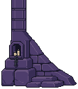
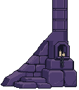
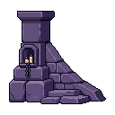
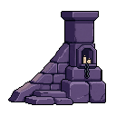

Before · small separate props
After · broad connected foundations
One substantial stone buttress per side, joined to the existing purple masonry. PixelLab source art, cleaned and connected at native resolution in LibreSprite.
Review branch · not mergedLeft: the earlier small-prop arrangement from the previous Unity capture. Right: the new foundations. The earlier capture has different gems/animation poses; the controls and layout are unchanged.
One connected opaque silhouette each. Nine meaningful opaque colors, binary transparency, no resampling. The upper stem uses the current column pixels; the wider base and candle recess belong to the same sprite.




Rattlebones, three enemies, live gems and existing HUD. Native foundation scale is 1× at 360, 2× at 720, and 3× at 1080. Safe-area test uses 24px left/right, 120px top and 96px bottom.
Five phone layouts passed: connected column joints, physical-edge placement, no opaque foundation pixels inside the playable board, controls above scenery, and identical control dimensions. Same paused-frame comparisons confirm the upper scene and board remain pixel-identical when only the foundations are toggled.
PixelLab: 31 generations total (including rejected attempts). No USD credits used. No device test; no merge.
Left LibreSprite source · Right LibreSprite source · Native checks · Unity evidence